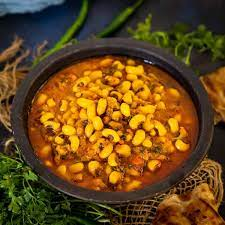

Packed with protein and fiber, black eyed peas curry – lobia daal – is a particularly healthy option as well as a tasty one. Peas are soaked overnight for best results and the curry is made with a tomato base. It’s best eaten with roti (flatbread), in which case the curry sauce should be kept a little thicker, or with rice.
